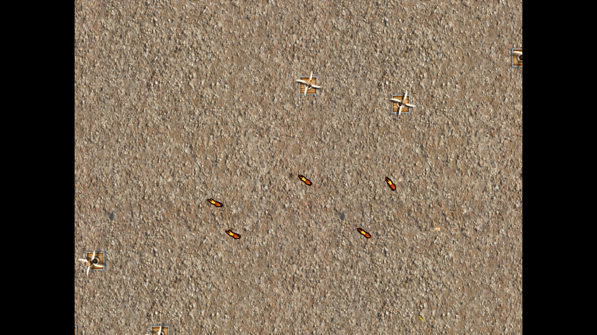
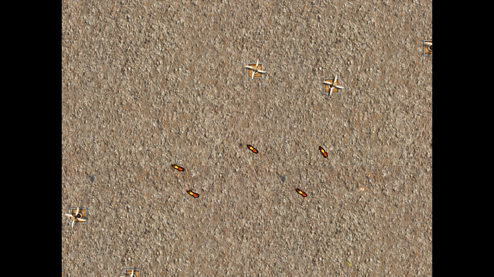
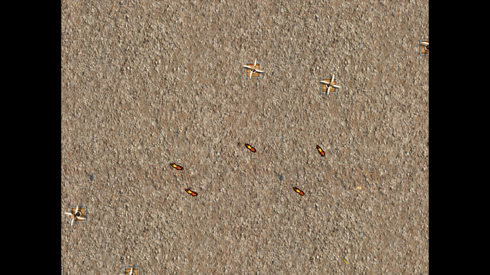

Camera View 1
"A World in 3D" is a Unity project that implements different steering behaviors.
It implements flocking, steering, and different advanced steering behaviors such as leader following and path following
A colosseum with 15 obstacles randomly spread out across the field. A flock of lions chase after the human who is running away from the lions and collecting gold coins at the same time. When the human gets eaten and die new human is instantiated to continue on the chase.

Camera View 1